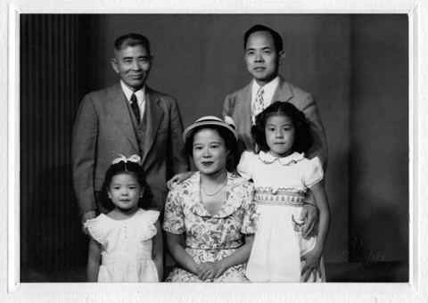

アメリカ日系一世 ロバート汐見の足跡（コラム）
同郷 田中宇八氏の足跡
今回はロバート汐見と同じ佐島出身の田中宇八さんをご紹介させて頂きます。
島通いも1年近く経った頃、道ですれ違ったおばあさんに｢暑いですね。｣と声を掛けたら、｢汐見のもんかいね。汐見のじいさんは私の父親とポートランドに行ったんよ。｣と教えて頂きました。初耳です。佐島からは当時英領カナダ・バンクーバー郊外のスティーブストンへの移民が多かったのですが、田中宇八さんとロバートの父佐市の2人はポートランドを選んだそうです。宇八さんは料理人として、佐市は機械の販売員として生業を立てました。
アメリカのルーツ探しサイト、アンセストリー・ドットコム(Ancestry.com)で調べたところ、宇八さんは1881年(明治14年)生まれで佐市と同い年でした。1897年に神戸からモンマスシャー号に乗り6月9日にポートランドに入港しています。佐市の入国記録は1907年以前より遡れませんが、もしかしたらこの時も同行していたのかもしれません。であれば当時2人は16歳でした。
宇八さんはその後何度も日米を行き来しています。小さな島から往復一ヶ月の船旅を繰り返し、最後の旅は77歳の高齢だった事に驚きます。
1917年11月5日 シアトル入港。｢ふしみ丸｣で神戸より。35歳。
1920年4月2日 シアトル入港。｢あふりか丸｣で横浜より。38歳。
1935年6月25日 シアトル入港。｢ジェファーソン大統領号｣で神戸より。55歳。
1957年6月3日 ポートランド入港｢ようわ丸｣にて。77歳。
宇八さんとロバート一家との記念写真が残されています。ロバートは父の佐市を頼って13歳でポートランドに行きましたが、実の父よりも面倒を見てくれたと宇八さんを慕い、帰国する度に田中家に立ち寄り、亡くなられてからもお墓参りを欠かさなかったという事です。

ロバート汐見を調べる内に、少しずつ島の移民の歴史も判って来ました。佐島や近隣の島の移民の歴史は忘れられつつあり、実際に移民を経験した方やそのご家族も高齢化が進んでいます。今後、何らかの形で纏めてホームページなどに残せたらと思います。